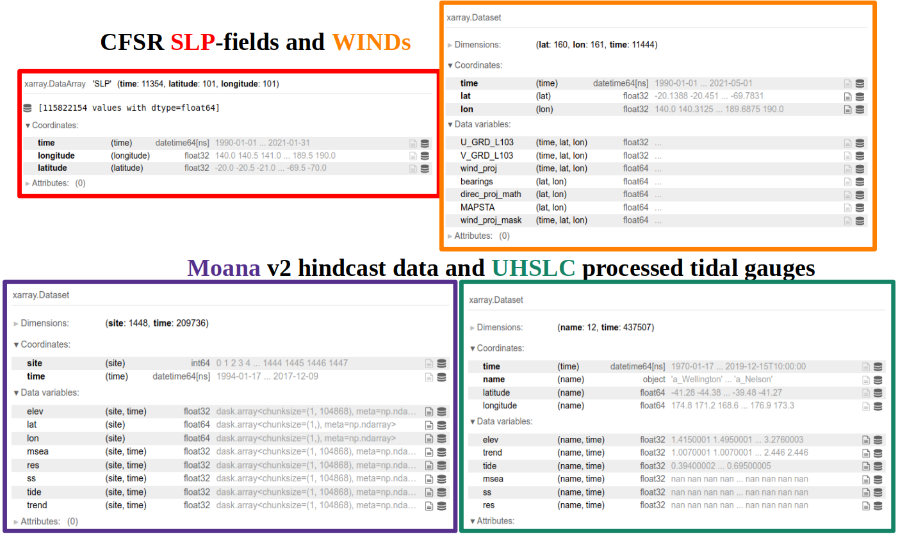
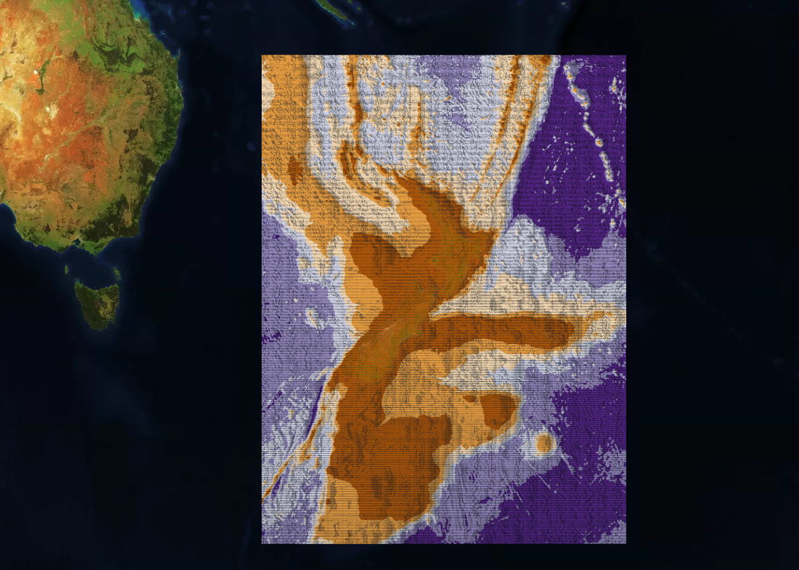

geoocean-nz-ss¶
This repository will contain all the updated information in the shared project between GeoOcean-MetOcean
updated info at: https://drive.google.com/drive/folders/1P1fNSxZNj2Mv6H1cyK-QLoWC-QldzPZV?usp=sharing !!
And the last pptx presentation (20th of July) !!
below, a summary of the region and data involved in the first part of the analysis can be seen:

jupyter book summary here
related repos:
https://github.com/metocean/storm_surge (additonal python codes)
https://github.com/metocean/storm_surge_data (all storm surge data is hosted here)
https://gitlab.com/geoocean/teslakit (some math tools were created here)
TODO (or doing)¶
Preparing the FINAL experiments visualizations tools to evaluate results
Add EXTRA and better plots to KM analysis notebook + THEORY explanations
Add extra theory to repo explanatory notebook
Finalize notebooks regarding GPs and SARIMA models
Description¶
Storm surge is the rise of water level generated by wind and atmospheric pressure changes associated with tropical or extra-tropical storms, over and above the astronomical tide (AT). Storm surge is one of the most critical components of coastal flooding and its magnitude has a large spatial variability. Flooding associated with storm surges is one of the most common natural hazards for coastal areas worldwide (Cagigal et al., 2019) …
In this project, which is a collaboration project between the University of Cantabria (Spain) and MetOcean (New Zealand), we will develop different machine learning tools that might help in the forecast of a storm-surge model …
Data explanation¶
Different datasets will be used in the project, but all of them belongs to one of these categories:
Sea-level-pressure fields, which can be the ERA5 or the CFSR reanalysis
Storm surge hindcast data, which can be Moana, DAC, CoDEC…
Storm surge real observations, where different datasets / organizations are involved!!
For the rest of the project and in the book, the majority of the examples are built over the datasets explained below:
The Moana v2 hindcast as the storm surge hindcast predictand
The CFSR sea-level-pressure fields and u10 and v10 wind components as the predictors (notice here that we also calculated the projected winds to a determined location in the islands, go to the end of this notebook to see results)
Some UHSLC tidal gauges as the “validators”, although more tidal gauges from different resources / organizations might be also helpful
data format is available in the figure below:

Main contents¶
Statistical tools, notebooks, data …
Project organization¶
├── LICENSE
|
├── .gitignore
├── .gitattributes <- These are .git configuration files
|
├── _config.yml
├── _toc.yml <- These are config files for the jupyter-book
|
├── .github
| └── workflows
| └── deploy.yml <- YAMO file for the Github Actions deployment
|
├── references.bib <- Project bibliography with articles, books...
|
├── README.md <- The top-level README for developers using this project
|
├── data
│ ├── slp <- Sea-level-pressure fields from ERA5 / CFSR
│ ├── ss-hindcast <- Storm surge hindcast models
│ ├── ss-obs <- Storm surge real observations data
│ └── extra <- Additional data that might be helpful
│
├── media
| ├── images
| └── videos <- Some media files extracted from project workflows
│
├── notebooks <- Jupyter notebooks. This folder contains all the explanatory
| jupyter notebooks used in the project (.ipynb)
│
├── environment.yml <- The environment file for reproducing the analysis environment, e.g.
│ generated with `conda freeze > environment.yml`
├── requirements.txt <- Another environment file for reproducing the analysis environment, e.g.
│ generated with `pip-chill --no-version > requirements.txt`
│
├── sscode <- Source code for use in this project
│ ├── __init__.py <- Makes src a Python module
| ├── modules* <- Python scripts with different modules (*not a subfolder)
| | ├── data
| | ├── pca
| | ├── linear
| | └── ...
│ └── plotting <- Plotting scripts related with the mathematical ones
│ └── ...
│
└── report <- Project description in pdf format (contracts...):
MSVC1901_UoCantabria_01_V4 - Final.pdf
New Zealand bathymetry¶
We also downloaded the public GEBCO New Zealand bathymetry data with 450 meters resolution (in longitude and latitude), in case depth data is required… example: apply depth filters to Moana v2 hindcast data, etc
An HTML file available here was created using this bathymetry data (find here GEBCO terms of use), and kepler.gl!! Below an image of how the HTML should look like:

Installation¶
Create an environment in conda¶
To run the toolbox you first need to install the required Python packages in an environment. To do this we will see Anaconda, which can be downloaded freely here.
Once you have installed it on your PC, open the Anaconda prompt (in Mac and Linux, open a terminal window) and use the cd command to go to the folder where you have cloned this repository.
Create a new environment named ssnz with all the required packages:
conda env create -f environment.yml
Activate conda environment¶
All the required packages have been now installed in an environment called ssnz. Now, activate this new environment:
conda activate ssnz
Additional support:¶
Data used in the project and a detailed explanation of the acquisition can be requested from jtausiahoyal@gmail.com or tausiaj@unican.es!!
Authors¶
Javier Tausía Hoyal
Paula Camus Braña
Fernando J. Méndez Incera
Antonio S. Cofiño González